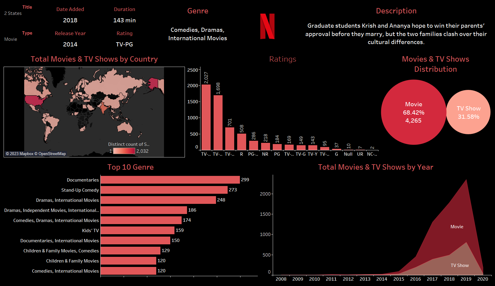
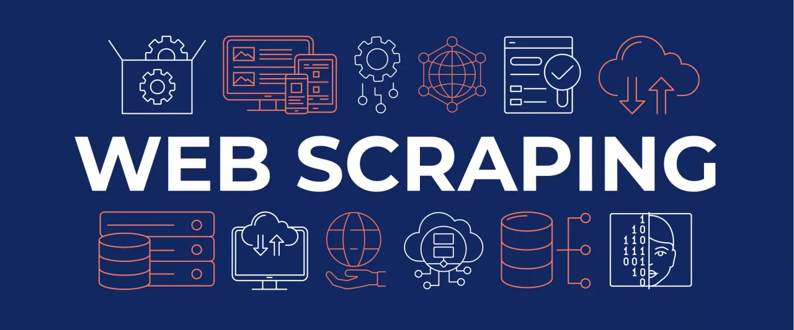

Projects By Vikash Bisht
Covid-19 Mask Detection

The Covid-19 Mask Detection project focuses on creating a real-time mask detection model using deep learning and transfer learning. The objective is to develop a system that can automatically identify whether a person is wearing a mask or not, which is essential for enforcing mask-wearing guidelines during the Covid-19 pandemic. The model was trained using a dataset of over 600 images, likely obtained from Kaggle. These images consisted of examples of individuals both wearing and not wearing masks, serving as the basis for the model to distinguish between the two classes.
In summary, the Covid-19 Mask Detection project involved training a real-time mask detection model using deep learning and transfer learning techniques. A dataset of over 600 images, likely obtained from Kaggle, was used for training. Libraries like OpenCV and Scikit-learn played a crucial role in the implementation of the model. The resulting system can accurately identify whether individuals are wearing masks in real-time, contributing to efforts in controlling the spread of Covid-19.
Netflix Dashboard using Tableau
The project was created to analyze the correlation between various variables related to Netflix using a dataset obtained from Kaggle. Insights were derived from the data to gain a better understanding of the trends within the dataset. To identify trends and patterns between different variables, a Tableau dashboard was developed, utilizing various visualizations. The visualizations helped in visually representing the relationships and dependencies within the dataset. By leveraging Tableau's features, the project aimed to provide valuable insights into the Netflix-related data and enhance understanding of the trends and patterns present.
Fabricating Dataset with Web Scrapping using Beautiful Soup
The project involved fabricating a dataset through web scraping using Beautiful Soup, a popular Python library for parsing HTML and XML data. The primary objective was to create JSON and CSV datasets from the Disney Wikipedia page for further analysis. Using Beautiful Soup's functionality, the project navigated through the HTML structure, identified relevant data, and extracted it. This data was then organized and formatted into JSON and CSV formats to create the datasets. JSON (JavaScript Object Notation) is a popular data interchange format, while CSV (Comma-Separated Values) is commonly used for tabular data representation.
In summary, the project involved fabricating datasets through web scraping using Beautiful Soup. The Disney Wikipedia page was the target for data extraction, with the objective of creating JSON and CSV datasets. Beautiful Soup, along with libraries like requests and pickle, facilitated the web scraping process, allowing for the extraction, organization, and serialization of the desired data.